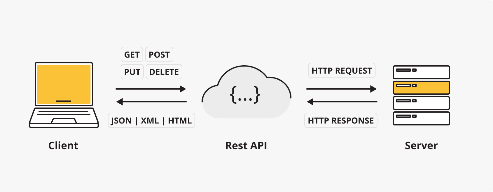

REST (Representational State Transfer) es un estilo de arquitectura de software utilizado para diseñar interfaces de aplicaciones web.
REST API (Application Programming Interface) es una interfaz de servicios web construida sobre los principios de REST, que permite a diferentes sistemas comunicarse e intercambiar datos mediante el protocolo HTTP.

Las características principales de REST API incluyen:
- Sin estado (Stateless): cada solicitud contiene toda la información necesaria para procesarla.
- Orientación a recursos (Resource-based): todos los datos se consideran recursos, identificados mediante URI.
- Interfaz uniforme (Uniform Interface): utiliza métodos HTTP estándar (GET, POST, PUT, DELETE, etc.)
- Cacheable (Cacheable): las respuestas pueden marcarse explícitamente como almacenables en caché o no.
Conceptos clave de REST API
1. Recurso (Resource)
En REST, un recurso es cualquier información que puede ser nombrada, como usuarios, productos, pedidos, etc. Cada recurso tiene un identificador único (URI).
2. Métodos HTTP
REST API utiliza métodos HTTP estándar para definir operaciones sobre los recursos:
| Método HTTP | Descripción | Idempotencia | Seguridad |
|---|---|---|---|
| GET | Obtener recurso | 是 | 是 |
| POST | Crear nuevo recurso | 否 | 否 |
| PUT | Actualizar todo el recurso | 是 | 否 |
| PATCH | Actualizar parcialmente el recurso | 否 | 否 |
| DELETE | Eliminar recurso | 是 | 否 |
3. Códigos de estado
Los códigos de estado HTTP indican el resultado del procesamiento de la solicitud:
| Código de estado | Categoría | Códigos de estado comunes |
|---|---|---|
| 2xx | Éxito | 200 OK, 201 Created |
| 3xx | Redirección | 301 Moved Permanently |
| 4xx | Error del cliente | 400 Bad Request, 404 Not Found |
| 5xx | Error del servidor | 500 Internal Server Error |
4. Formatos de datos
Formatos de intercambio de datos comunes en REST API:
- JSON（JavaScript Object Notation）
- XML（eXtensible Markup Language）
- A veces también se utilizan formatos como YAML, CSV, etc.
Mejores prácticas de diseño de REST API
1. Principios de diseño de URI
- Usa sustantivos en lugar de verbos para representar recursos.
- Bueno:
/users - Malo:
/getUsers
- Bueno:
- Usa letras minúsculas y guiones (-).
- Evita las extensiones de archivo.
- Usa el plural para representar colecciones.
- Representa relaciones de forma jerárquica:
/users/{id}/orders
2. Control de versiones
Se recomienda incluir la información de versión de la API en la URI o en los encabezados de la solicitud:
- Ruta URI:
/v1/users - Encabezado de solicitud:
Accept: application/vnd.myapi.v1+json
3. Filtrado, ordenación y paginación
Para recursos de colección, proporciona parámetros de consulta:
- Filtrado:
/users?role=admin - Ordenación:
/users?sort=-created_at - Paginación:
/users?page=2&limit=10
4. Seguridad
- Usa HTTPS
- Implementa autenticación (OAuth2, JWT)
- Limita la frecuencia de solicitudes
- Valida los datos de entrada
Ejemplos de REST API
Ejemplo de API de gestión de usuarios
Ejemplo
GET /api/v1/users
Accept: application/json
# Crear nuevo usuario
POST /api/v1/users
Content-Type: application/json
{
"name": "张三",
"email": "zhangsan@example.com"
}
# Obtener usuario específico
GET /api/v1/users/123
Accept: application/json
# Actualizar información del usuario
PUT /api/v1/users/123
Content-Type: application/json
{
"name": "张三(更新)",
"email": "new-email@example.com"
}
# Eliminar usuario
DELETE /api/v1/users/123
Ejemplo de respuesta
Ejemplo
{
"status": "success",
"data": {
"id": 123,
"name": "张三",
"email": "zhangsan@example.com",
"created_at": "2023-01-01T00:00:00Z"
}
}
// Respuesta de error
{
"status": "error",
"message": "User not found",
"code": 404
}
Herramientas para probar REST API
- PostmanPotente herramienta de prueba de API
- cURLHerramienta de línea de comandos
- InsomniaCliente de prueba de API ligero
- Swagger/OpenAPIHerramienta de documentación y prueba de API
Ejemplo de cURL
Ejemplo
curl -X GET https://api.example.com/users/123 \
-H "Accept: application/json"
# Solicitud POST
curl -X POST https://api.example.com/users \
-H "Content-Type: application/json" \
-d '{"name":"李四","email":"lisi@example.com"}'
Frameworks de desarrollo de REST API
Según el lenguaje de programación, existen varios frameworks para desarrollar REST API:
| Lenguaje | Frameworks populares |
|---|---|
| JavaScript | Express.js, NestJS |
| Python | Django REST Framework, Flask |
| Java | Spring Boot |
| PHP | Laravel, Symfony |
| Ruby | Ruby on Rails |
| Go | Gin, Echo |
I. Principios básicos de diseño
1. Adoptar convenciones de nomenclatura claras
Principios básicos：
- Usa sustantivos (no verbos) para representar recursos.
- Usa el plural para representar colecciones.
- Mantén la coherencia e intuitividad en la nomenclatura.
Ejemplo：
✅ Buen diseño: /users, /products, /orders
-
❌ Mal diseño: /getUsers, /addProduct, /all-orders
Recomendaciones adicionales：
- Usa nombres jerárquicos para los recursos, reflejando las relaciones entre ellos:
/companies/{companyId}/departments/{departmentId}/employees - Para mejorar la legibilidad, usa guiones (kebab-case) en nombres de recursos con varias palabras:
/shipping-addressesen lugar de/shippingaddresses - Mantén la coherencia de nomenclatura durante las iteraciones de versiones de la API, evitando cambios innecesarios que causen confusión en los clientes.
2. Usar correctamente los métodos HTTP
Uso básico：
- GET: leer un recurso (idempotente)
- POST: crear un nuevo recurso
- PUT: actualizar completamente un recurso (idempotente)
- PATCH: actualizar parcialmente un recurso
- DELETE: eliminar un recurso (idempotente)
Ejemplo：
GET /users # 获取用户列表 GET /users/123 # 获取特定用户 POST /users # 创建新用户 PUT /users/123 # 完全更新用户 PATCH /users/123 # 部分更新用户 DELETE /users/123 # 删除用户
Recomendaciones adicionales：
- Comprende la importancia de la idempotencia: GET, PUT y DELETE son operaciones idempotentes; varias llamadas producen el mismo resultado.
- Para operaciones por lotes, considera usar POST en lugar de PUT, porque PUT normalmente espera que el cliente especifique claramente el identificador del recurso.
- Al diseñar operaciones PATCH, considera usar los formatos estándar JSON Patch (RFC 6902) o JSON Merge Patch (RFC 7386).
- Para operaciones complejas, puedes usar extensiones de recursos:
POST /users/123/activate比POST /activateUser/123Más acorde con los principios REST
3. Usar códigos de estado HTTP apropiados
Códigos de estado comunes：
- 200 OK: Solicitud exitosa
- 201 Created: Recurso creado exitosamente
- 204 No Content: Éxito pero sin contenido de retorno (como operaciones DELETE)
- 400 Bad Request: Error del cliente
- 401 Unauthorized: No autenticado
- 403 Forbidden: Sin permisos
- 404 Not Found: El recurso no existe
- 409 Conflict: Conflicto de recursos
- 500 Internal Server Error: Error del servidor
Sugerencias de extensión：
- Utilice códigos de estado más detallados para mejorar la expresividad de la API:
- 429 Too Many Requests: Exceso de frecuencia de solicitudes
- 405 Method Not Allowed: Método HTTP no compatible
- 415 Unsupported Media Type: Tipo de contenido no compatible
- 422 Unprocessable Entity: Error semántico
- Para simplificar el procesamiento del cliente, mantenga la coherencia dentro de las principales categorías de error: errores de cliente (4xx) y errores de servidor (5xx)
- Proporcione siempre mensajes de error y códigos de error significativos junto con el código de estado
II. Diseño de consultas y filtrado
4. Implementar una paginación eficaz
Implementación básica：
- Uso
limit和offset或page和sizeParámetros - Incluir metadatos de paginación en la respuesta
Ejemplo：
GET /products?limit=20&offset=40 GET /products?page=3&size=20
Ejemplo de respuesta:
{
"data": [...],
"pagination": {
"total": 523,
"pages": 27,
"current_page": 3,
"per_page": 20,
"next": "/products?page=4&size=20",
"prev": "/products?page=2&size=20"
}
}
Sugerencias de extensión：
- Considere usar paginación basada en cursores, especialmente al manejar grandes conjuntos de datos o datos que se actualizan con frecuencia
- Establezca valores de paginación predeterminados y límites máximos razonables para evitar que solicitudes demasiado grandes afecten el rendimiento
- Proporcione enlaces HATEOAS en las respuestas de paginación para facilitar la navegación del cliente (como los enlaces next/prev del ejemplo anterior)
- Para datos de series temporales, puede usar paginación basada en tiempo:
GET /events?since=2023-01-01T00:00:00Z&until=2023-01-31T23:59:59Z
5. Proporcionar filtrado, ordenación y búsqueda flexibles
Implementación básica：
- Filtrar mediante parámetros de consulta:
?status=active - Uso
sortParámetros para ordenar:?sort=created_at - Compatibilidad con ordenación por múltiples campos y orden ascendente/descendente:
?sort=price:asc,rating:desc
Ejemplo：
GET /products?category=electronics&price_min=100&price_max=500&sort=price:asc GET /users?role=admin&search=john
Sugerencias de extensión：
- Proporcione sintaxis de expresiones para consultas complejas:
?price=gt:100,lt:500 - Implemente opciones de coincidencia parcial y búsqueda difusa:
?name=like:john - Compatibilidad con selección de campos, permitiendo que el cliente especifique los campos necesarios:
?fields=id,name,email - Considere implementar endpoints GraphQL como complemento para consultas particularmente complejas
- Para combinaciones de filtrado de uso común, proporcione filtros predefinidos:
?filter=recentPuede ser equivalente a?created_after=30days&sort=created_at:desc
6. Implementar un control de versiones de API eficaz
Métodos principales：
- Versión en la ruta URL:
/api/v1/users - Versión por parámetro de consulta:
/api/users?version=1 - Versión por cabecera de solicitud:
Accept: application/vnd.company.v1+json
Sugerencias de extensión：
- La versión en la ruta URL es la más intuitiva, pero provoca inestabilidad en la URI
- La versión por cabecera de solicitud mantiene la URI estable, pero no es lo suficientemente intuitiva para los clientes
- Siga los principios del control de versiones semántico en las iteraciones de versiones:
- Los cambios compatibles hacia atrás usan el número de versión menor (v1.1)
- Los cambios incompatibles usan el número de versión mayor (v2)
- Proporcione un período de migración entre versiones nuevas y antiguas, permitiendo una transición fluida para los clientes
- Indique claramente en la documentación el estado del ciclo de vida de cada versión de la API: en desarrollo, estable, obsoleta, descontinuada
III. Diseño de respuestas
7. Diseñar una estructura de respuesta coherente
Estructura básica：
- Utilice objetos contenedores para distinguir entre datos y metadatos
- Mantenga un formato coherente en las respuestas de error
Ejemplo de respuesta exitosa：
{
"status": "success",
"data": {
"id": 123,
"name": "Example Product",
"price": 99.99
},
"meta": {
"timestamp": "2023-06-15T08:30:00Z"
}
}
Ejemplo de respuesta de error:
{
"status": "error",
"error": {
"code": "VALIDATION_ERROR",
"message": "Invalid input data",
"details": [
{"field": "email", "message": "Must be a valid email address"}
]
},
"meta": {
"timestamp": "2023-06-15T08:30:00Z",
"request_id": "req-123456"
}
}
Sugerencias de extensión：
- Incluya códigos de error únicos en las respuestas de error para facilitar la resolución de problemas y la referencia en la documentación
- Para errores complejos, proporcione detalles de error estructurados, especialmente en errores de validación de formularios
- Incluya un identificador de solicitud (request_id) para facilitar el seguimiento de registros y el soporte al cliente
- Considere la compatibilidad con la internacionalización, proporcionando versiones multilingües de los mensajes de error o asignaciones de códigos de error
- Evite filtrar información sensible o detalles de implementación en los mensajes de error
8. Implementar el principio HATEOAS
Concepto básico：
- HATEOAS（Hypermedia as the Engine of Application State）
- Incluya enlaces a recursos relacionados en las respuestas, haciendo que la API sea autodescriptiva
Ejemplo：
{
"data": {
"id": 123,
"name": "John Doe"
},
"links": {
"self": "/users/123",
"orders": "/users/123/orders",
"update": {"href": "/users/123", "method": "PUT"},
"delete": {"href": "/users/123", "method": "DELETE"}
}
}
Sugerencias de extensión：
- Utilice nombres de relaciones de enlace estandarizados (como los definidos en las especificaciones HAL o JSON:API)
- Incluya información contextual de los enlaces, como el método HTTP y el tipo de medio requerido
- Genere enlaces dinámicamente según los permisos del usuario, mostrando solo las operaciones disponibles para el usuario actual
- Considere usar JSON Schema para proporcionar la autodescripción del formato de los datos de entrada
9. Elegir el formato de serialización adecuado
Formatos comunes：
- JSON: El más utilizado, ligero y fácil de analizar
- XML: Más estricto pero más verboso
- MessagePack: Formato binario, adecuado para escenarios sensibles al rendimiento
Sugerencias de extensión：
- Utilice la negociación de contenido para admitir múltiples formatos: el cliente especifica el formato deseado mediante la
Acceptcabecera - Para JSON, siga una convención de nomenclatura coherente (camelCase o snake_case)
- Considere los requisitos de escenarios especiales:
- El formato CSV es adecuado para exportar grandes volúmenes de datos
- Protocol Buffers o gRPC son adecuados para la comunicación entre microservicios de alto rendimiento
- JSON-LD es adecuado para escenarios que requieren datos semánticos
- Proporcione un modelo de datos y nombres de campos coherentes para los diferentes formatos
IV. Seguridad y rendimiento
10. Implementar autenticación y autorización eficaces
Métodos comunes：
- Claves API: Adecuadas para la comunicación entre servicios
- OAuth 2.0: Adecuado para autorización de terceros
- JWT (JSON Web Tokens): Adecuado para autenticación sin estado
Sugerencias de extensión：
- Elija el flujo de autorización adecuado para los diferentes escenarios de uso de la API:
- Usuario a servidor: Flujo de código de autorización
- Servidor a servidor: Flujo de credenciales de cliente
- Implemente un control de permisos de grano fino, siguiendo el principio de privilegio mínimo
- Implemente mecanismos de rotación y revocación de claves API
- Utilice los ámbitos (scopes) estándar de OAuth 2.0 para definir permisos
- Considere implementar control de acceso basado en atributos (ABAC) para escenarios de autorización complejos
11. Implementar limitación de peticiones y control de flujo
Implementación básica：
- Proteja la API mediante la limitación de la tasa de solicitudes
- Proporcione información de límites en las cabeceras de respuesta
Ejemplo de cabeceras de respuesta：
X-RateLimit-Limit: 100 X-RateLimit-Remaining: 95 X-RateLimit-Reset: 1623760800
Sugerencias de extensión：
- Implemente límites de múltiples niveles:
- Límite por dirección IP (para prevenir el abuso anónimo)
- Límite por usuario/clave API (uso justo)
- Límite por recurso/endpoint (proteger operaciones sensibles)
- Ofrezca planes avanzados u opciones de escalado bajo demanda
- Utilice algoritmos de token bucket o leaky bucket para manejar picos de tráfico
- Implemente control de flujo adaptativo, ajustando dinámicamente los límites según la carga del sistema
- Proporcione canales prioritarios o capacidad reservada para clientes críticos
12. Usar el caché adecuadamente
Implementación básica：
- Utilice ETags y la cabecera If-None-Match
- Establezca directivas Cache-Control adecuadas
Ejemplo：
Cache-Control: max-age=3600, must-revalidate ETag: "33a64df551425fcc55e4d42a148795d9f25f89d4"
Sugerencias de extensión：
- Establezca diferentes estrategias de caché según el tipo de recurso:
- Contenido estático: max-age más largo
- Perfiles: max-age más corto o directiva private
- Datos que cambian con frecuencia: usar ETag en lugar de max-age
- Implemente solicitudes condicionales (If-Modified-Since, If-None-Match) para reducir el uso de ancho de banda
- Considere implementar el caché a nivel de API Gateway o CDN
- Proporcione mecanismos de invalidación de caché, especialmente para recursos que necesitan actualizarse repentinamente
- Utilice etiquetas de caché (Cache Tags) para una gestión de caché de grano fino
13. Soporte para compresión de contenido
Implementación básica：
- Compatibilidad con compresión gzip y Brotli
- Utilice las cabeceras Accept-Encoding y Content-Encoding
Sugerencias de extensión：
- Aplique compresión automáticamente a respuestas grandes, pero evite comprimir respuestas pequeñas (<1KB)
- Optimice los niveles de compresión para diferentes tipos de contenido
- En escenarios sensibles al rendimiento, considere precomprimir respuestas comunes
- Supervise la tasa de compresión y el uso de CPU para encontrar el equilibrio óptimo
- Considere manejar la compresión en la capa de proxy/gateway para reducir la carga del servidor de aplicaciones
V. Documentación y mantenibilidad
14. Proporcionar documentación completa de la API
Implementación básica：
- Usar la especificación OpenAPI/Swagger
- Incluir ejemplos de solicitudes y respuestas
Sugerencias de extensión：
- Adoptar el enfoque de "documentación como código", versionando la especificación de la API junto con el código
- Proporcionar un navegador de API interactivo que permita a los desarrolladores probar la API directamente
- Incluir tutoriales sobre casos de uso comunes y escenarios de integración
- Proporcionar fragmentos de código de ejemplo para cada endpoint (en varios lenguajes de programación)
- Implementar un registro de cambios de la API, marcando claramente las funciones obsoletas y las nuevas
- Considerar la creación de una comunidad o foro de desarrolladores para fomentar el intercambio de conocimientos
15. Monitoreo y registro de logs
Implementación básica：
- Registrar los tiempos de solicitud/respuesta
- Realizar seguimiento de las tasas de error y los patrones de uso
Sugerencias de extensión：
- Implementar trazado distribuido, utilizando W3C Trace Context o estándares similares
- Configurar métricas de monitoreo multidimensionales:
- Rendimiento de endpoints (latencia P95/P99)
- Tasas de error y distribución por tipo
- Patrones de uso de los clientes
- Consumo de recursos (CPU, memoria, ancho de banda)
- Implementar alertas inteligentes que detecten patrones anómalos en lugar de umbrales simples
- Proporcionar una consola para desarrolladores que permita a los consumidores de la API ver sus propias estadísticas de uso
- Usar formatos de registro estructurados (como JSON) para facilitar el análisis y la búsqueda de logs
16. Proporcionar información útil para la depuración de errores
Implementación básica：
- Proporcionar mensajes de error claros
- Incluir códigos de error únicos
Sugerencias de extensión：
- Ajustar el nivel de detalle de los errores según el entorno (evitar filtrar información sensible en producción)
- Implementar un centro de errores que asigne códigos de error a guías detalladas de solución de problemas
- Proporcionar enlaces de ayuda sensibles al contexto
- Ofrecer sugerencias automatizadas de corrección para errores comunes
- Proporcionar seguimientos de pila y contexto más detallados en entornos de desarrollo
- Implementar mecanismos de notificación automática para errores críticos
VI. Consideraciones avanzadas de diseño
17. Procesamiento por lotes y operaciones asíncronas
Procesamiento por lotes：
- Soporte para operaciones de creación, actualización y eliminación por lotes
- Proporcionar opciones de manejo de éxito parcial
Ejemplo de operación por lotes：
POST /users/batch
{
"operations": [
{"method": "POST", "path": "/users", "body": {"name": "User 1"}},
{"method": "PUT", "path": "/users/123", "body": {"name": "Updated User"}}
]
}
Operaciones asíncronas：
- Para tareas de larga duración, devolver 202 Accepted
- Proporcionar un endpoint de estado de la tarea
Ejemplo de flujo asíncrono：
POST /reports/generate
Response: 202 Accepted
Location: /tasks/abc-123
GET /tasks/abc-123
Response: {"status": "processing", "progress": 45, "eta": "30s"}
GET /tasks/abc-123
Response: {"status": "completed", "result": "/reports/xyz-789"}
Sugerencias de extensión：
- Implementar notificaciones asíncronas basadas en webhooks para devolver la llamada al cliente cuando la tarea se complete
- Ofrecer opciones de atomicidad para operaciones por lotes (todo o nada)
- Soporte para dependencias en operaciones por lotes (una operación depende del resultado de otra)
- Proporcionar mecanismos de prioridad de tareas y capacidad de cancelación
- Implementar estrategias de reintento de tareas y mecanismos de manejo de fallos
18. Considerar la evolución del diseño de la API
Principios básicos：
- Usar adiciones en lugar de modificaciones
- Evitar eliminaciones; mejor deprecar y luego eliminar
- Mantener la compatibilidad hacia atrás
Sugerencias de extensión：
- Establecer una política clara del ciclo de vida de la API:
- Expectativas de estabilidad para versiones de vista previa/Alpha/Beta
- Período de deprecación (normalmente al menos 6-12 meses)
- Período de mantenimiento para versiones de soporte a largo plazo (LTS)
- Usar indicadores de funciones (Feature Flags) para implementar nuevas funcionalidades gradualmente
- Implementar análisis de uso de la API para identificar qué endpoints y funcionalidades ya no se utilizan
- Proporcionar herramientas y ejemplos de migración para ayudar a los clientes a realizar la transición a nuevas versiones
- Considerar puntos de extensión en el diseño, como campos personalizados o soporte de metadatos
VII. Optimizaciones específicas del sector y nuevas tendencias
Optimización de API para aplicaciones móviles
- Implementar endpoints GraphQL que permitan a los clientes móviles solicitar exactamente los datos que necesitan
- Soporte para respuestas parciales para reducir el uso de ancho de banda:
?fields=id,name,thumbnail - Proporcionar API de precarga por lotes para reducir los viajes de ida y vuelta de la red
- Considerar un diseño adaptable, ajustando el tamaño de las respuestas según las capacidades del dispositivo y las condiciones de la red
- Implementar mecanismos de sincronización incremental que transmitan solo los datos modificados
Consideraciones de API para Internet de las cosas (IoT)
- Soporte para protocolos ligeros (como MQTT o CoAP)
- Implementar un modelo de estado del dispositivo y comunicación bidireccional
- Optimizar el uso del ancho de banda mediante formatos binarios y compresión
- Diseñar estrategias para operaciones sin conexión y resolución de conflictos
- Proporcionar APIs de gestión de dispositivos y actualización de firmware
Metodología de desarrollo API-first
- Adoptar un enfoque de diseño primero (Design-First) en lugar de código primero (Code-First)
- Usar procesos de desarrollo impulsados por el modelo de API (por ejemplo, generar código a partir de la especificación OpenAPI)
- Implementar un proceso de revisión del diseño de API para garantizar la coherencia y la calidad
- Establecer guías de estilo de API y documentación de mejores prácticas
- Usar pruebas de contrato para garantizar que la implementación cumpla con la especificación
VIII. Resumen
Una API REST bien diseñada requiere equilibrar cuidadosamente múltiples factores, incluidos la usabilidad, el rendimiento, la seguridad y la mantenibilidad. Siguiendo estas mejores prácticas, los equipos de desarrollo pueden crear APIs que cumplan con los principios REST y satisfagan las necesidades de las aplicaciones modernas. La clave es mantener la coherencia, la intuitividad y pensar siempre desde la perspectiva del consumidor de la API. Con la evolución continua de la economía de las APIs, un diseño de API de alta calidad se convertirá en un factor clave para el éxito de las organizaciones.
IX. Lecturas adicionales
- RESTful Web APIs (Leonard Richardson, Mike Amundsen)
- Patrones de diseño de API (JJ Geewax)
- Diseño de Web API: mejores prácticas para construir aplicaciones modernas (Arnaud Lauret)
- Guía de seguridad de API REST (OWASP)
- Modelo de madurez de Richardson: comprensión de los niveles de evolución de las API REST
Haz clic para compartir notas
<p style="font-size:14px;">¡Las notas deben ser una extensión del contenido de este artículo!</p><br> <p style="font-size:12px;"><a href="../tougao.html" target="_blank">Envío de artículos, haga clic aquí</a></p> <p style="font-size:14px;"><a href="./runoob-user-test-intro.html" target="_blank">Cómo obtener el código de invitación de registro</a></p> <h3 class="text-muted"><i class="fa fa-info-circle" aria-hidden="true"></i> Antes de compartir notas, debe <a href=".." class="runoob-pop">iniciar sesión</a>.</h3> <p><a href="./runoob-user-test-intro.html" target="_blank">Cómo obtener el código de invitación de registro</a></p>